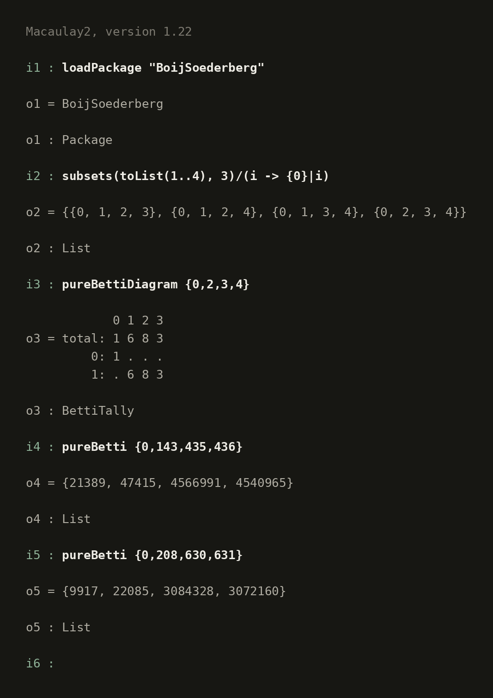
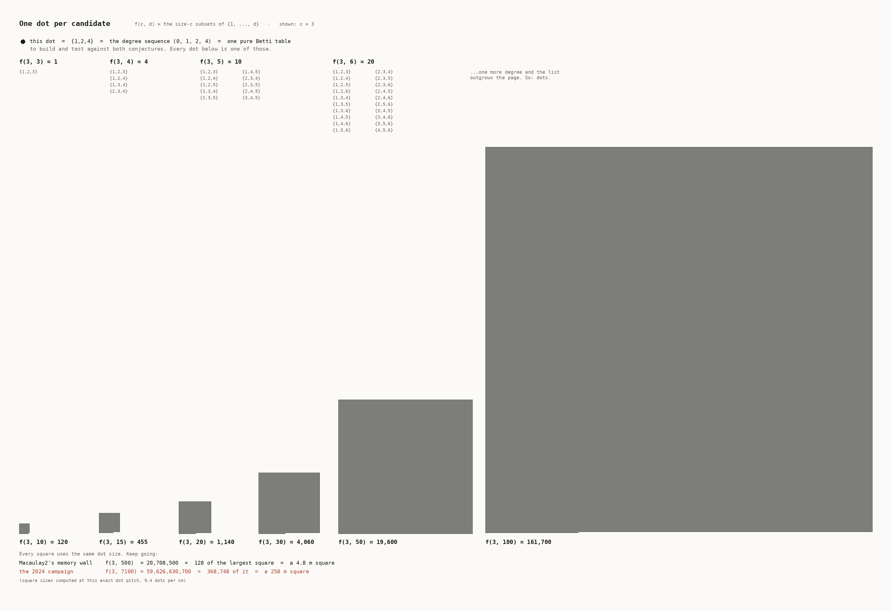
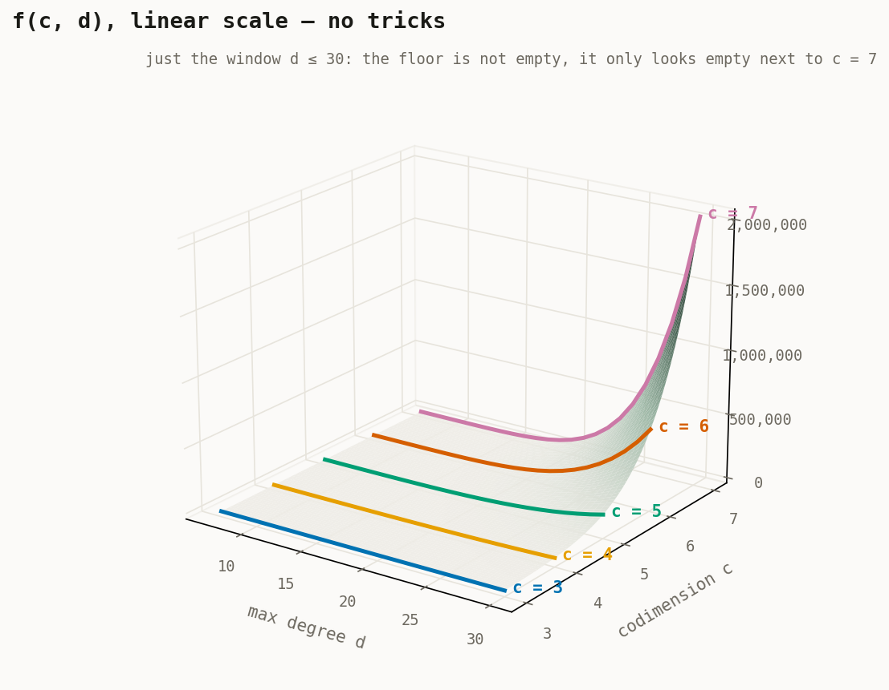
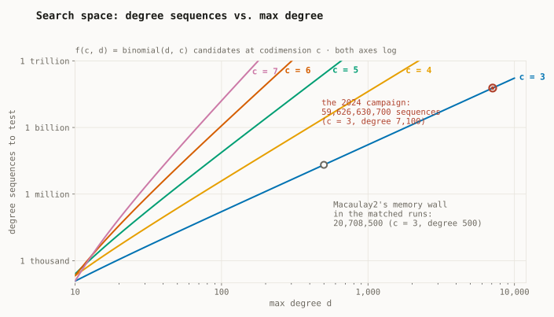

boij-soderberg-engine
We were using Macaulay2 to do the search initially, and after a little while, that's when I started to write my engine instead. Macaulay2 was painfully slow, and I could feel it in my bones that I could make something faster. Just as the core was getting finished, Macaulay2 was starting to really struggle to push the search any farther, and, essentially at the same time that my engine found the fourth or fifth counterexample — whichever it was, the one Macaulay2 really couldn't get past after that — my advisor realized the pattern. We were able to rigorously prove it, discovering one of the paper's three main theorems (arXiv:2512.24320).
My engine fed the other side of the same result, too. The first search had been turning up examples of what became an infinite family of counterexamples — all following exactly Pell's equation (think of it like the Fibonacci sequence, but in algebra), which itself is, in no exaggerated way, a genuine miracle. The same engine, sweeping tens of billions of degree sequences and computing numbers too large to work with conventionally using ordinary CPUs, is what surfaced the counterexamples: once you bound their size, there are exactly four. The engine found them; the proofs are the paper's — pure number theory for the infinite family, and a by-hand case analysis, more than a dozen cases, for the four. It is a great illustration of how pure and abstract mathematics can be, while at the same time being so utterly unwieldy. Given the number-theoretic and commutative-algebra methods we have now, we were able to find beautiful, essentially miraculous connections and explanations for one of the results; the others remain more and more hidden — we simply lack the tools and the vision for them so far.

Benchmarks
Task-matched runs against an equivalent Macaulay2 implementation: same machine, same candidate families, same checks, program CPU time.
On matched searches it runs ~70–115× faster than an equivalent Macaulay2 implementation across codimensions 3–7: a 1.2-million-sequence search in about a second versus a hundred, 20.7 million in 11 seconds versus ~17 minutes. Past that Macaulay2 runs out of memory, since it has to hold the whole candidate list at once. The 2024 campaign swept tens of billions of sequences, codimension 3 out to degree 7,100, in a handful of overnight runs.


How the engine is built
The core represents the actual mathematical structures and runs the calculations; a recursive enumeration algorithm generates those structures inside it; and a performance layer runs the computations and checks them against the conjectures, within the hardware and runtime constraints and the inherent difficulty of large-integer arithmetic on a 64-bit processor.



A snippet from a larger file — the middle of one routine, not the whole algorithm:
//at this point all the fractions are reduced as much as possible, so L will be the lcm of all of them
//question is, if we have (a*b) and (c*d), is lcm((a*b),(c*d)) the same as lcm(lcm(a,c),lcm(b,d))?
//if so, this is good, since we can check L before multiplying out any one denominator, as any given denominator can be very big once fully multiplied out, but if we can go
//factor by factor for each one, we will have a much, much easier time
//lcm(2*3,6*1) = 6, lcm(lcm(2,6),lcm(3,1)) = lcm(6,3) = 6. Seems promising
//IF we can "distribute" lcms like this, then we just update L not with each denominator, but with each iteration of a term in every denominator
//eg if we have denoms (abc), (def), and (xyz), we don't have start with L=1 and do L = lcm(L,abc) then L = lcm(L,def) then check L (since abc and def could each be huge and at risk of
//overflowing), but rather we start with L=1 and do L = lcm(L,a,d,x), then check L, then L = lcm(L,b,e,y), ... and stop if at any point L is big enough to pass the tests
//if L is NOT big enough and we reach the end, does the pass necessarily fail? Could it still work? DO we have to worry abt overflow? Will solve these tomorrow
//NOTE: STL lcm function DOES take more than 2 params
//
//start L calc
int L = 1; //"global" L, lcm of all interim L's
int target = binom(c,c/2);
int warning_val = INT_MAX; //lol sqrt(LLONG_MAX) is just INT_MAX... duh, sqrt(2^64) = sqrt(2^32*2) = sqrt((2^32)^2) = 2^32
if(target > warning_val) cout << "In function test_conjs_v2, target val for L greater than sqrt(LLONG_MAX), overflow likely.\n";
//each denom will have c-1 factors, each of which may or may not be 1
//need to go term by term in each denominator. remember each denominator is .second in a pair, and a vector of pairs makes up a whole pi_i
//CANNOT DO THIS. L MUST BE LCM OF ALL DENOMS, BUT WITHIN A DENOM L MUST BE AT LEAST THE ENTIRE PRODUCT OF THAT DENOM
//What this means is in any one denom, we can check if L would ever be made too big, but if not, L has to become the entire product
vector<int> L_vec(c+1);
L_vec.at(0) = 1; //since pi_0 is just 1/1
int curr_L = 1;
//need to calc an L for each denom, checking at every step, then do lcm of all the L's, again checking at every step
for(int i=1; i<=c; i++){ //for each pi (starting at 1 since pi_0 is just 1/1)
curr_L = 1; //reset curr L
for(int j=0; j<c-1; j++){ //for each factor of the denom
curr_L = curr_L *= pis.at(i).at(j).second;
//each lcm can only make L bigger, so I can actually check intermediately
if(curr_L >= target){
cerr << "An interim L hit " << curr_L << " which is > binom(c,c/2); both conjs autopass.\n";
return true;
}
//curr_L is not too big, push to L vec
L_vec.at(i) = curr_L;
}
// cerr << "After pi_" << i << ", curr L is now " << L << endl;
}
Ownership
The core is a ~1,200-line C++ engine I wrote by hand in 2024, cross-validated case-by-case against Macaulay2's own BoijSoederberg package. I later used an AI agent to reorganize the repo, write the docs, and add the test and benchmark harness. The engine found the counterexamples; the proofs are the paper's.